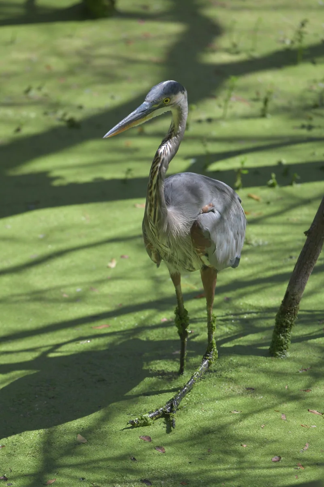

EE Labs
Four interactive labs for circuits, signals, and control. 153 experiments with consistent plots and numbers; tests block a bad deploy. MIT licensed.


Southern California
Datacenter hardware engineer.
High-speed, RF & optical interconnect.
Hardware / Open tools / Wildlife
Selected workRed fox / Photograph by Reed
RF bench tools
02 / 05Eight RF bench calculators for phone and tablet, from power and Smith matching to noise and delay. The math uses your numbers. State stays in the URL.

Language models
03 / 05In progress
A guide to working with language models: 49 techniques, 8 levels, and 66 runnable examples. Some pages include measured local-30B results.

AI infrastructure
04 / 05An evidence-graded ledger of what the AI buildout is delivering across energy, chips, infrastructure, models, and apps. Sources include IEA, DOE, Epoch AI, BLS, and Census. Export the data as CSV or JSON.

Photography workflow
05 / 05Cull and catalog wildlife photos locally, with burst compare, optional local or API species identification, a life list, and a map. Rejects stay on disk until you choose to delete them.


@reed.wildlife.photography
Vermilion flycatcher / Photograph by Reed



Hardware.
Open tools.
Wildlife.
I’m Reed Cameron Osaki, a datacenter hardware engineer in Southern California. I work with high-speed, RF, and optical interconnect.
I build public tools for circuits, RF bench work, and understanding AI infrastructure. I photograph wildlife.